Trabalho prático com rcontroll - Dia 2
Introdução prática ao TROLL 4 com rcontroll
CIRAD
Apr 7, 2026
Menu

Introdução
TROLL 4.0: representando fluxos de água e carbono, fenologia foliar e variação intraespecífica de traços em um modelo de dinâmica florestal baseado em indivíduos de espécies mistas (Maréchaux et al. 2025)
Ambiente R
Durante esta sessão prática, utilizaremos o modelo TROLL 4.0 com arquivos brutos de uma saída de simulação. Também usaremos os pacotes tidyverse para manipulação de tabelas e criação de gráficos. Faça o download deles (pré-requisito!):
Carregue-os com:
Entradas
As entradas e saídas brutas das simulações estão disponíveis em
data/day2/.
Arquivos
[1] "R1_input_climate.txt" "R1_input_daily.txt" "R1_input_global.txt"
[4] "R1_input_pedology.txt" "R1_input_species.txt" Espécies
O TROLL 4 introduz dois novos traços funcionais:
- LA: área foliar (cm2)
- TLP: potencial hídrico foliar no ponto de perda de turgor (MPa)
Espécies
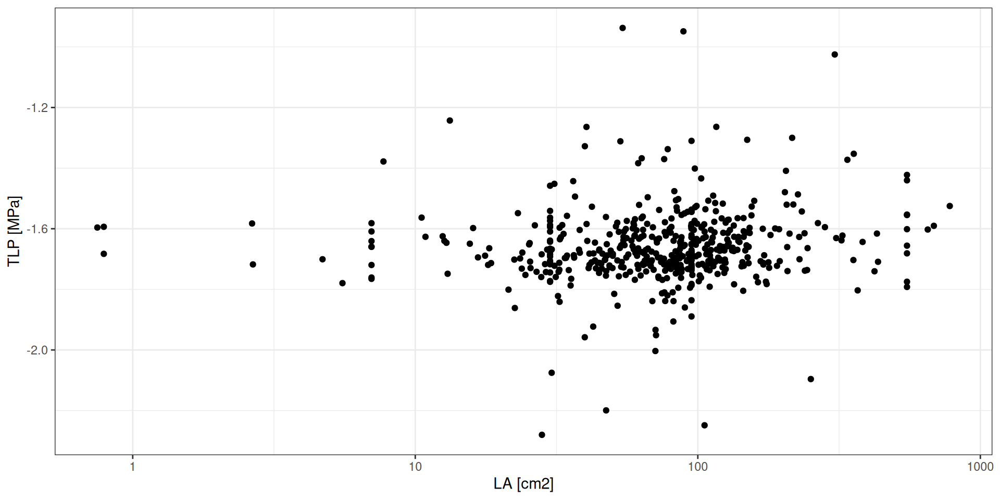
Clima
O TROLL 4 agora utiliza exclusivamente valores a cada meia hora das 5 variáveis climáticas:
- Temperature (°C)
- Rainfall (cm)
- WindSpeed (m/s)
- VaporPressureDeficit (hPa)
- Iradiance (W/m2)
OBS: rcontroll inclui uma função para ajudar na preparação dos dados climáticos (sessão do dia 3).
Clima
# A tibble: 70,080 × 6
DayJulian time_numeric Temp Snet VPD WS
<dbl> <dbl> <dbl> <dbl> <dbl> <dbl>
1 1 6 23.2 1.1 0.0830 2.35
2 1 6.5 23.3 1.1 0.0981 2.39
3 1 7 23.4 1.1 0.118 2.47
4 1 7.5 23.5 24.9 0.120 2.51
5 1 8 23.6 49.3 0.140 2.71
6 1 8.5 23.9 101. 0.209 3.24
7 1 9 24.2 154. 0.285 3.68
8 1 9.5 24.6 181. 0.318 3.64
9 1 10 25.0 209. 0.310 3.25
10 1 10.5 25.4 295. 0.295 2.82
# ℹ 70,070 more rowsClima
# A tibble: 2,920 × 2
NightTemperature Rainfall
<dbl> <dbl>
1 26.0 20.0
2 26.6 2.72
3 26.2 6.26
4 26.7 13.7
5 25.4 13.2
6 24.3 16.6
7 25.9 1.67
8 26.2 7.40
9 23.2 49.8
10 25.6 0.399
# ℹ 2,910 more rowsClima
g <- read_tsv("data/day2/R1_input_daily.txt") %>%
select(-time_numeric) %>%
group_by(DayJulian) %>%
summarise_all(mean) %>%
bind_cols(read_tsv("data/day2/R1_input_climate.txt")) %>%
gather(variable, value, -DayJulian) %>%
ggplot(aes(DayJulian, value)) +
geom_line() +
facet_wrap(~ variable, scales = "free_y") +
theme_bw() + xlab("") + ylab("")Clima
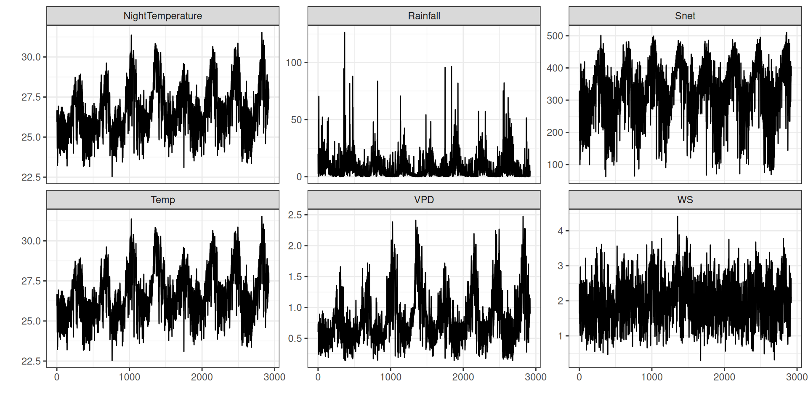
Clima
g <- read_tsv("data/day2/R1_input_climate.txt") %>%
mutate(date = as_date("1999-01-01") + 1:n()) %>%
group_by(pentad = floor_date(date, "5 days")) %>%
summarise(pr = sum(Rainfall)) %>%
ggplot(aes(yday(pentad), pr)) +
geom_line(aes(group = year(pentad))) +
theme_bw() +
geom_smooth() + xlab("") + ylab("Precipitação em 5 dias [mm]")Clima
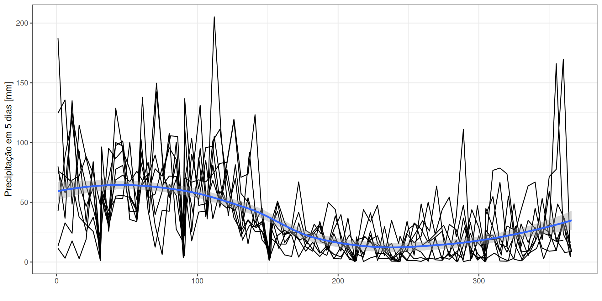
Parâmetros
O TROLL 4 inclui novos parâmetros de ecossistema que controlam a fenologia, novos parâmetros intraespecíficos que controlam as variações de LA e TLP, e novas macros que controlam os pesos das camadas de solo e as equações da curva de retenção de água:
- pheno_a0: limiar para mudança na taxa de queda de folhas velhas, em proporção do TLP
- pheno_b0: limiar para mudança na taxa de queda de folhas velhas, em proporção da altura da árvore
- pheno_delta: amplitude da mudança na taxa de queda de folhas velhas
- sigma_LA: variação intraespecífica em LA (lognormal)
- sigma_TLP: variação intraespecífica em TLP (normal)
- SOIL_LAYER_WEIGHT: pesos das camadas de solo: biomassa relativa, condutância, transpiração máxima
- WATER_RETENTION_CURVE: curva de retenção de água (Brooks & Corey ou Van Genuchten Mualem)
Solo
O TROLL 4 utiliza múltiplas informações de solo para parametrizar as curvas de retenção de água com Brooks & Corey ou Van Genuchten Mualem:
- número de camadas
- espessura da camada (m)
- proporção de silte (%)
- proporção de argila (%)
- proporção de areia (%)
- conteúdo orgânico do solo (g)
- densidade aparente seca (kg)
- pH
- capacidade de troca catiônica (cmolC)
Solo
# A tibble: 5 × 8
layer_thickness proportion_Silt proportion_Clay proportion_Sand SOC DBD
<dbl> <dbl> <dbl> <dbl> <dbl> <dbl>
1 0.1 2.64 60.1 37.3 2.54 1.12
2 0.4 2.64 60.1 37.3 2.54 1.12
3 1 2.64 60.1 37.3 2.54 1.12
4 2.5 2.64 60.1 37.3 2.54 1.12
5 12.1 2.64 60.1 37.3 2.54 1.12
# ℹ 2 more variables: pH <dbl>, CEC <dbl>Solo
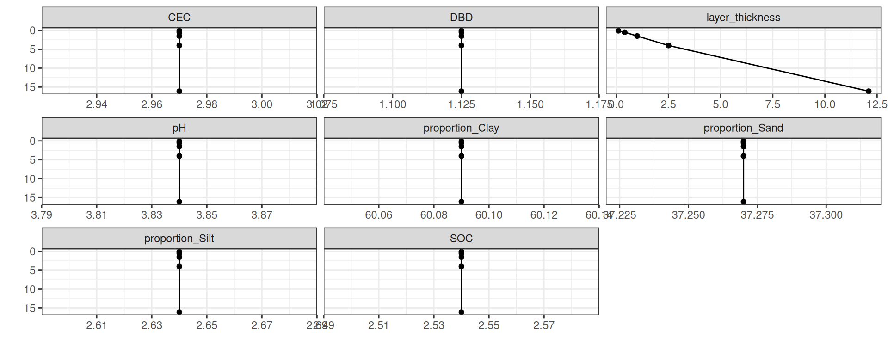
Saídas
Fluxos diários de carbono e água na atmosfera e no solo.
Arquivos
[1] "R1_0_LAIdynamics.txt" "R1_0_LAImature.txt"
[3] "R1_0_LAIold.txt" "R1_0_LAIyoung.txt"
[5] "R1_0_soilproperties.txt" "R1_0_sumstats.txt"
[7] "R1_0_water_balance.txt" "R1_input_climate.txt"
[9] "R1_input_daily.txt" "R1_input_global.txt"
[11] "R1_input_pedology.txt" "R1_input_species.txt" Dinâmica florestal

GPP: Produtividade Primária Bruta
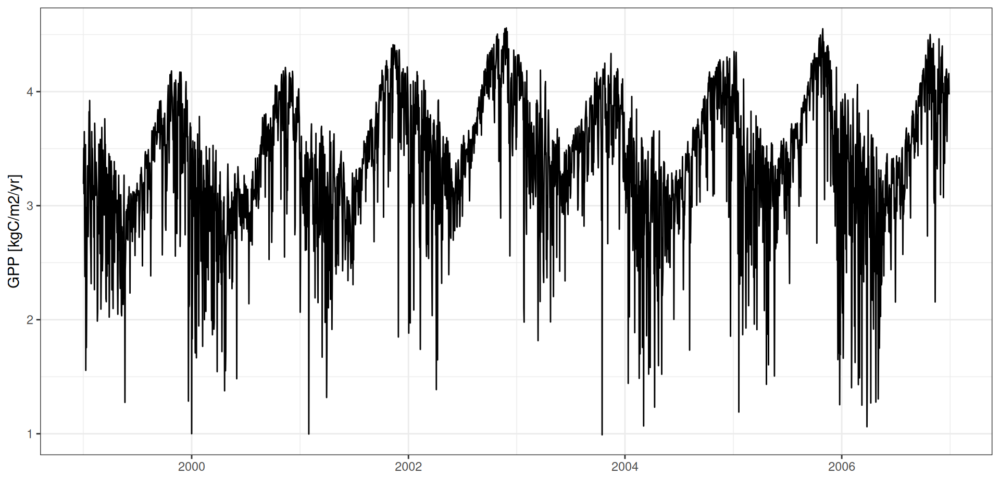
GPP - Sazonalidade
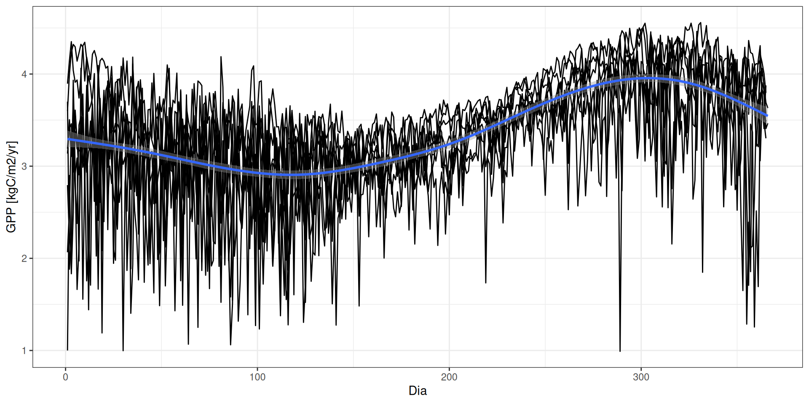
GPP - Fatores determinantes
par <- read_tsv("data/day2/R1_input_daily.txt") %>%
group_by(DayJulian) %>%
mutate(par = Snet*2.27*60*30/10^3/10^3/4) %>%
summarise(par = sum(par))
g <- read_tsv("data/day2/R1_0_sumstats.txt") %>%
mutate(date = as_date("1999-01-01") + iter) %>%
mutate(par = par$par) %>%
ggplot(aes(par, gpp*10^2*365/10^3)) +
geom_point() +
theme_bw() +
geom_smooth() + xlab("PAR [mol/m2/day]") + ylab("GPP [kgC/m2/yr]")GPP - Fatores determinantes

LAI: Índice de Área Foliar
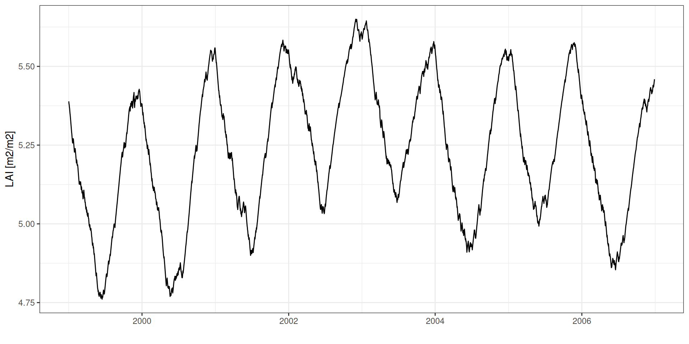
LAI por idade foliar
g <- list(
young = read_tsv("data/day2/R1_0_LAIyoung.txt", col_types = "d"),
mature = read_tsv("data/day2/R1_0_LAImature.txt", col_types = "d"),
old = read_tsv("data/day2/R1_0_LAIold.txt", col_types = "d")
) %>% bind_rows(.id = "age") %>%
gather(height, lai, -age, -iter) %>%
group_by(iter, age) %>%
summarise(lai = sum(lai)) %>%
mutate(date = as_date("1999-01-01") + iter) %>%
ggplot(aes(date, lai, col = age)) +
geom_line() +
theme_bw() + xlab("") + ylab("LAI [m2/m2]")LAI por idade foliar
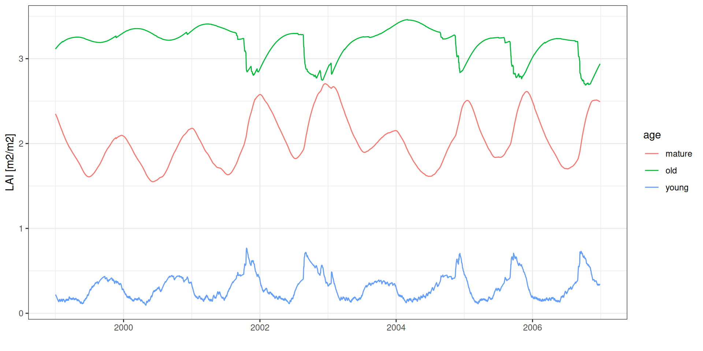
Serapilheira
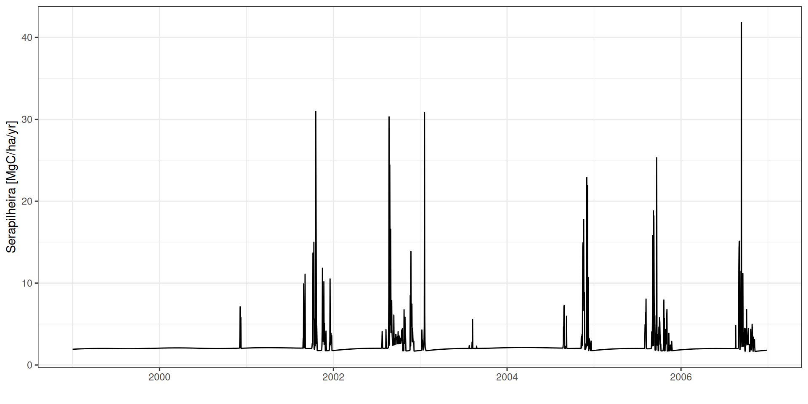
Balanço hídrico
Balanço hídrico
\[\Delta SWC = P-I-Q-E-T-L\]

Balanço hídrico
g <- read_tsv("data/day2/R1_0_water_balance.txt") %>%
mutate(date = as_date("1999-01-01") + iter) %>%
mutate(precipitation = precipitation/10^3) %>%
select(date, precipitation, interception,
transpitation_0, transpitation_1, transpitation_2,
transpitation_3, transpitation_4,
leak, evaporation, runoff) %>%
gather(component, value, -date) %>%
mutate(value = value*1000) %>%
filter(value >= 1) %>%
ggplot(aes(date, value, col = component)) +
geom_line() +
theme_bw() +
scale_y_log10() + xlab("") + ylab("[mm]")Balanço hídrico
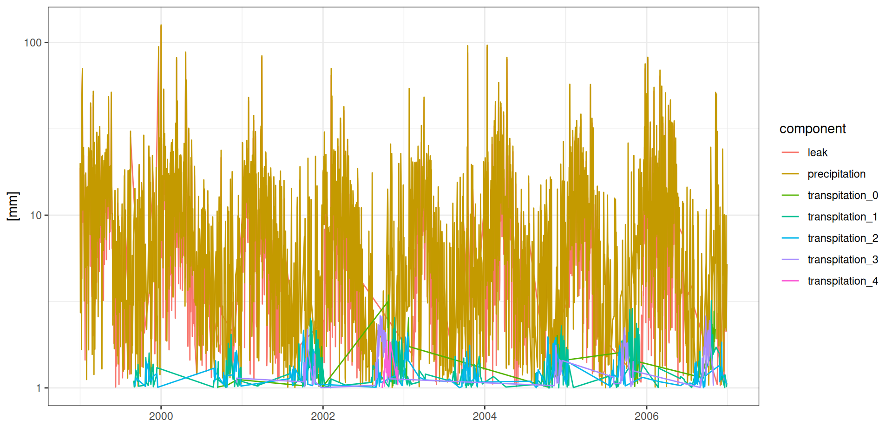
Balanço hídrico
g <- read_tsv("data/day2/R1_0_water_balance.txt") %>%
mutate(date = as_date("1999-01-01") + iter) %>%
mutate(transpiration = (transpitation_0 + transpitation_1 + transpitation_2 +
transpitation_3 + transpitation_4)*1000,
"soil evaporation" = evaporation*1000,
"canopy evaporation" = (precipitation/1000-throughfall)*1000) %>%
select(date, transpiration, "soil evaporation", "canopy evaporation") %>%
gather(component, value, -date) %>%
ggplot(aes(date, value)) +
geom_line() +
facet_wrap(~ component, nrow = 3) +
theme_bw() + xlab("") + ylab("[mm]")Balanço hídrico
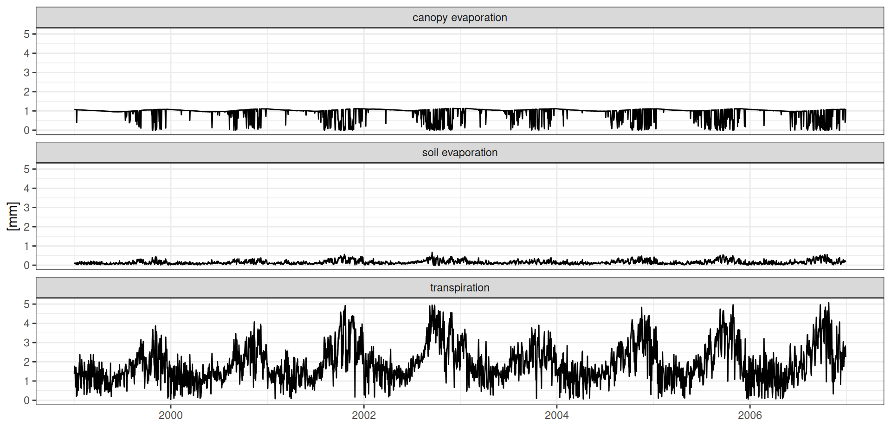
ET: Evapotranspiração
read_tsv("data/day2/R1_0_water_balance.txt") %>%
mutate(date = as_date("1999-01-01") + iter) %>%
mutate(et = (transpitation_0 + transpitation_1 + transpitation_2 +
transpitation_3 + transpitation_4 + evaporation +
(precipitation/1000-throughfall))*1000) %>%
ggplot(aes(date, et)) +
geom_line() + theme_bw() + xlab("") + ylab("ET [mm]")
SWC: Conteúdo de Água no Solo
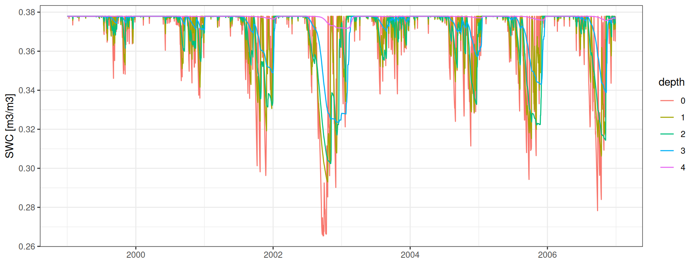
Conteúdo de água no solo
resolution <- 0.1
layers_depths <- c(0.1, 0.5, 1.5, 4, 16.1)
dry_months <- 10:11
wet_months <- 6:7
depths <- tibble(depth = layers_depths) %>%
mutate(depth_max = cumsum(depth)) %>%
mutate(depth_min = lag(depth_max)) %>%
mutate(depth_min = ifelse(is.na(depth_min), 0, depth_min))
data <- read_tsv("data/day2/R1_0_water_balance.txt") %>%
mutate(date = as_date("1999/01/01") + iter) %>%
select(date, starts_with("SWC"), starts_with("SWP")) %>%
gather(variable, value, -date) %>%
separate(variable, c("variable", "layer"), convert = TRUE) %>%
mutate(depth_max = depths$depth_max[layer+1]) %>%
mutate(depth_min = depths$depth_min[layer+1]) %>%
select(date, depth_min, depth_max, variable, value)
raster <- data %>%
mutate(depth_min = round(depth_min, 1),
depth_max = round(depth_max, 1)) %>%
rowwise() %>%
mutate(depth = list(seq(depth_min,
depth_max,
by = resolution))) %>%
unnest(depth)Conteúdo de água no solo
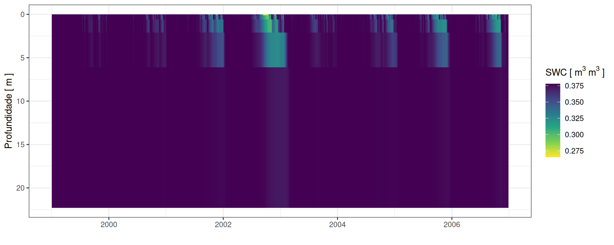
Perfis de água no solo
g <- data %>%
filter(variable == "SWC") %>%
filter(month(date) %in% c(dry_months, wet_months)) %>%
mutate(season = ifelse(month(date) %in% dry_months, "dry", "wet")) %>%
group_by(variable, depth_min, depth_max, season) %>%
summarise(m = median(value),
ll = quantile(value, .05),
hh = quantile(value, .95)) %>%
mutate(depth = (depth_min + depth_max)/2) %>%
ggplot(aes(depth, m, col = season)) +
geom_smooth(se = FALSE) +
geom_linerange(aes(ymin = ll, ymax = hh)) +
geom_point() +
theme_bw() +
coord_flip() +
scale_x_reverse("Profundidade [ m ]") +
ylab(expression("SWC ["~m^3~m^3~"]"))Perfis de água no solo
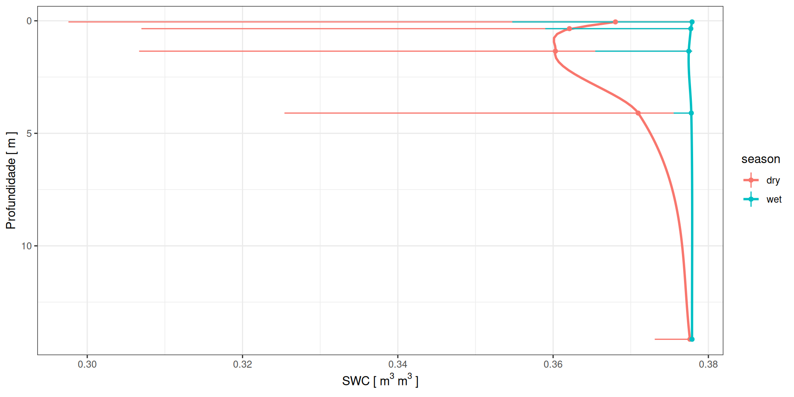